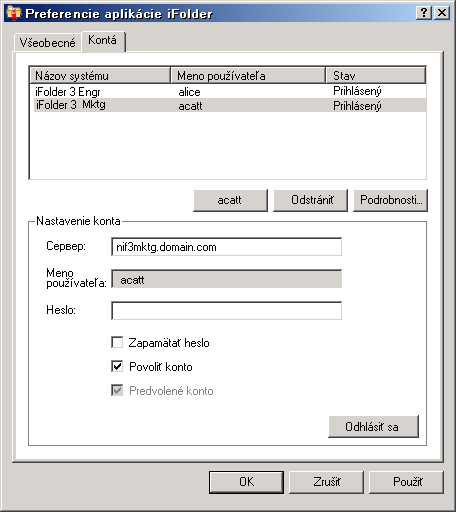

Konfigurácia konta aplikácie iFolder
Skôr, ako budete môcť vytvoriť alebo zdieľať v systéme priečinky iFolder, musíte nakonfigurovať najmenej jedno konto aplikácie iFolder. Pre každý hostiteľský počítač alebo server môžete vytvoriť iba jedno konto, môžete však vlastniť aj viacero kont.
Používateľ s odlišnou lokálnou prihlasovacou identitou a kontom používateľa sa môže prihlásiť v inom čase na rovnaký počítač a pomocou aplikácie iFolder môže vytvoriť vlastnú množinu priečinkov iFolder s danou identitou. Aplikácia iFolder synchronizuje iba priečinky iFolder, ktoré patria aktívnemu používateľovi.
-
Prístup k nastaveniu konta získate jedným z nasledujúcich spôsobov:
- Pri prvom spustení aplikácie iFolder po inštalácii vás aplikácia iFolder vyzve na nastavenie konta aplikácie iFolder. Kliknutím na tlačidlo Áno prejdete priamo na kartu Kontá v dialógovom okne Preferencie aplikácie iFolder.
-
Pravým tlačidlom kliknite na ikonu aplikácie iFolder
 v oblasti upozornení a vyberte možnosť Kontá. Otvorí sa karta Kontá v dialógovom okne Preferencie aplikácie iFolder.
v oblasti upozornení a vyberte možnosť Kontá. Otvorí sa karta Kontá v dialógovom okne Preferencie aplikácie iFolder.
-
Prístup do oblasti Nastavenie konta získate kliknutím na možnosť Nové.
-
Zadajte nasledujúce hodnoty:
Parameter Popis Server
Názov DNS alebo adresa IP podnikového servera iFolder, na ktorom máte vytvorené konto. Napríklad: svr21.example.com alebo 192.168.1.1.
Meno používateľa
Zadajte identitu používateľa pre toto konto. Správca aplikácie iFolder určí, či by ste ako formát mali použiť sieťovú identifikáciu používateľa (bežné meno LDAP), alebo e-mailovú adresu.
Ak je napríklad meno používateľa John Smith, je identifikácia používateľa jsmith a e-mailová adresa je john.smith@example.com. Správca nakonfiguruje nastavenie servera, ktoré určuje, ktorý z týchto dvoch formátov bude prijímaný v poli Meno používateľa pre účely overovania.
Heslo
Heslo pre meno používateľa.
Zapamätať heslo
Ak sa chcete automaticky prihlásiť na toto konto aplikácie iFolder pri prihlásení na počítač, vyberte možnosť Zapamätať heslo. Ďalšie informácie nájdete v časti Prihlásenie sa na konto aplikácie iFolder.
Ak sa zmení vaše sieťové heslo, automatické overenie pri najbližšom pokuse aplikácie iFolder o prihlásenie na konto aplikácie iFolder korektne zlyhá. Aplikácia iFolder vás vyzve na prihlásenie sa pomocou nového hesla a umožní zadať a uložiť nové heslo.
Povoliť konto
Ak chcete povoliť pre toto konto synchronizáciu pozvánok aplikácie iFolder, zoznamu používateľov a priečinkov aplikácie iFolder na pozadí, vyberte možnosť Povoliť konto.
Predvolené konto
Ak chcete pri vytváraní priečinkov iFolder nastaviť toto konto ako predvolené v rozbaľovacom zozname kont, vyberte možnosť Predvolené konto.
 -
Kliknite na tlačidlo OK alebo na tlačidlo Prihlásiť sa.
Ak sa zobrazí výzva s certifikátom, prezrite si certifikát a prijmite ho kliknutím na tlačidlo OK. Konto sa zobrazí v zozname kont so stavom Prihlásený. Aplikácia iFolder začne synchronizovať všetky existujúce priečinky iFolder, upozornenia aplikácie iFolder a zoznam používateľov pre toto konto.
-
Kliknutím na tlačidlo OK zatvorte dialógové okno Preferencie aplikácie iFolder.
-
Nastavte priečinky iFolder pre konto jedným z nasledujúcich spôsobov:
- Ak sú pre toto konto k dispozícii priečinky iFolder, zobrazí sa správa s upozornením aplikácie iFolder. Kliknutím na správu otvoríte dialógové okno Priečinky iFolder. Pokračujte postupom v časti Nastavenie dostupného priečinka iFolder.
- Ak pre konto nie sú k dispozícii žiadne priečinky iFolder alebo ak chcete okamžite začať pridávať priečinky iFolder, kliknite pravým tlačidlom na ikonu aplikácie iFolder a výberom možnosti Priečinky iFolder otvorte okno Priečinky iFolder. Pokračujte postupom v časti Vytvorenie priečinka iFolder.